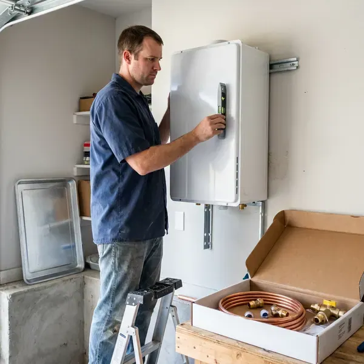

Electric Tankless Water Heater Installation in Cumberland Hill, RI
JPN Plumbing installs electric tankless water heaters from Stiebel Eltron, Rheem and EcoSmart across Cumberland Hill, RI, matched to your panel and fixtures.
- Low Standby Loss
- Upfront Pricing
- No Venting Required
- Code Compliant

Ready for Endless Hot Water in Cumberland Hill, RI?
Call JPN Plumbing for a free estimate and a panel check.
Electric Tankless Water Heater Installation in Cumberland Hill, RI
JPN Plumbing starts every electric tankless job at the electrical panel, not the water heater. Large units pull well over 100 amps, so we confirm your service can carry the load before anything gets ordered. It prevents surprises.
Work we handle every week:
- Whole-home units from Stiebel Eltron and Rheem
- Work that meets plumbing and electrical code
- Point-of-use units for sinks and guest baths

Additional Plumbing Installation Services in Cumberland Hill, RI
We install water heaters, pumps, lines, and fixtures across Cumberland Hill, RI with careful, permitted work that passes inspection the first time.


Customers
Why Choose JPN Plumbing for Electric Tankless Water Heater Installation in Cumberland Hill, RI?
Picking JPN Plumbing means working with plumbers who size electric tankless every week. We know the demands of local homes and water, from cold incoming temperatures in winter to hard water that scales up heating elements. Experience shows in the sizing.
- Energy Savings, Water is heated only when you open a tap, which trims the power bill.
- Small Footprint, These units fit in closets and small utility rooms.
- Accurate Sizing, We size by flow rate and temperature rise.
Citywide Coverage
From all-electric homes to additions and guest suites, our crews reach every corner of Cumberland Hill. Every install leaves room for future service.
Experienced Team
Stiebel Eltron, Rheem, EcoSmart and Bosch units are installed by our team regularly. They know each brand's requirements.
Safety-First Approach
We install pressure relief where required and follow local plumbing code. We test flow and temperature before heading out.
Trusted Certified Cumberland Hill Plumbing Services Professionals
At JPN Plumbing, we are proud to offer certified plumbing services throughout Cumberland Hill, RI. Those papers on the wall mean something. Our plumbers hold recognized industry credentials, and they follow strict safety and quality rules on every repair, installation and maintenance call we run.
Call Us Now PHCC Plumbing Contractor Recognition
PHCC Plumbing Contractor Recognition Better Business Bureau (BBB) Accreditation
Better Business Bureau (BBB) Accreditation Angi Certified Pro
Angi Certified Pro ISO 9001 Quality Management Certification
ISO 9001 Quality Management CertificationElectric Tankless Installation Services in Cumberland Hill, RI
EcoSmart Electric Tankless Water Heater Installation in Cumberland Hill, RI
EcoSmart units are popular for their digital temperature control and low price. JPN Plumbing sets EcoSmart units in homes across Cumberland Hill, RI. Before install we confirm your electrical service can carry the unit, since an ECO 27 needs three 40 amp breakers and 8 gauge wire on each circuit. Then we set the temperature.

Electric Tankless Installation Cost in Cumberland Hill, RI
Point-of-use electric tankless costs far less than a whole-home system. A whole-home install may need several circuits or a new panel, which can rival the unit price. We itemize the quote. You get a tank versus tankless comparison.
Cost Comparison: Electric Tankless vs. Traditional in Cumberland Hill, RI
Upfront, electric tankless usually costs more than a tank because of the electrical work. A tankless can outlive two tanks and skips standby loss, which narrows the gap over time. Usage decides it. We give you a side-by-side before you decide.
Electric Tankless for Guest Suites and Additions in Cumberland Hill, RI
Guest suites, detached studios and additions often sit far from the main water heater. Long hot lines waste water and heat, so a nearby electric tankless is often the better choice. We size it for the space. There is nothing to vent.
Point-of-Use Electric Tankless Installation in Cumberland Hill
A guest bath or a far kitchen sink can take a minute to get hot water from the main heater. A point-of-use electric tankless unit under that sink heats water right at the fixture, so it comes out hot in seconds and you stop running gallons down the drain while waiting. They fit under the sink. Small circuits are usually enough.
Navien Electric Tankless Water Heater Installation in Cumberland Hill, RI
Navien is best known for gas tankless, but JPN Plumbing installs whatever brand fits your home in Cumberland Hill, RI. We check the model against your panel and flow, then install it to spec to protect the warranty. Brand matters less than sizing. Code governs the rest.
Rheem Electric Tankless Water Heater Installation in Cumberland Hill
Rheem's RTEX line covers most of the whole-home electric tankless units we install. The RTEX-18 runs on two 40 amp breakers, while the RTEX-24 and RTEX-27 need three, so we match the model to your panel before ordering. Wall mounting is simple. Water, temperature and leak checks finish the job.

Emergency Electric Tankless Replacements in Cumberland Hill, RI
Sudden water heater failures in Cumberland Hill, RI still get a fast response from JPN Plumbing. A full tankless conversion takes some planning, but when the electrical service is already there, we can often swap in a new electric tankless unit within a day. Planning still matters. Emergencies get priority.
Electric Tankless Plumbers Near You in Cumberland Hill, RI
Our plumbers know local water conditions and electrical requirements. We coordinate with electricians so the circuits and the plumbing finish together and you get endless hot water from a clean, professional install. One visit, usually.
Local crews from JPN Plumbing handle electric tankless installs across Cumberland Hill. We are close by, so visits happen fast, and we know the panels and plumbing common in local homes. Homes in Rhode Island vary a lot. We plan for that.
JPN Plumbing at a Glance
- Fully licensed plumbing team covering Cumberland Hill, RI
- Same-day appointments and 24/7 emergency response
- Clear written estimates, no hidden fees
- 4.8-star rated by 684+ Rhode Island customers
Cumberland Hill Map
Cumberland Hill Information
- Population
- 8,140
- Area codes
- Local
- Service area
- Cumberland Hill and towns within a 40 mile drive
- Nearby
- Woonsocket, Valley Falls, Central Falls, Greenville
An electric tankless heater fires only when a tap opens, so a Cumberland Hill, RI home stops paying to keep a tank hot.
Expert Services
Call JPN Plumbing for honest, reliable plumbing from people who know the trade in Cumberland Hill, RI.
Our Specialized Plumbing Services in Cumberland Hill, RI
At JPN Plumbing, you get every kind of plumbing service from one company across Cumberland Hill, RI. We go from leak detection all the way to full system installations, for homes and commercial buildings, and we do it quickly at a fair price. Take a look at our core services below:


What to Expect on an Electric Tankless Install in Cumberland Hill, RI
Here is how we install your electric tankless water heater step by step.
Tell Us About Your Home
Call (401) 364-2507 and describe your home and hot water use. We review your panel and suggest the right size with clear pricing.
Prepare and Wire
We remove the old heater if needed and prepare the water lines. A licensed electrician installs or confirms the dedicated circuits.
Install and Test
We mount the unit, connect water and isolation valves and test for leaks. Then we confirm output and go over maintenance.
Frequently Asked Questions About Electric Tankless Water Heater Installation in Cumberland Hill
Electric tankless installation in Cumberland Hill, RI usually runs $2,500 to $6,000. That covers the unit, which runs $600 to $2,000 or more, plus labor and any electrical upgrades the panel or wiring needs. Panel work moves the price most. We quote in writing after a visit.
Yes, periodic descaling and inlet screen cleaning keep them running well. A water softener can cut down on maintenance needs.
Size depends on your fixtures, your incoming water temperature and your peak demand. Our technicians figure it during the visit and recommend a kilowatt rating that keeps up in the coldest month, not just the warmest.
Whole-home units can require 100 amps or more, so many homes need a panel review. Upgrades are coordinated if needed.
Installation requires plumbing plus high-amperage electrical work. A professional install keeps it safe and protects your warranty.
Permits are usually required, mostly because of the electrical work. Local inspectors review permitted work, and JPN Plumbing handles the permit and inspection steps so the job follows code. JPN Plumbing handles the permits and inspections in Cumberland Hill.
Doing it yourself means wiring a high-amperage 240 volt load and making water connections at once. Bad wiring or connections can start fires or leaks and void the warranty. Leave it to a pro.
We strongly recommend a licensed professional. High-voltage wiring and plumbing mistakes can be dangerous, and they often void the manufacturer warranty on the spot. Safety and code come first.
Hear From Customers Who Hired Our Plumbing Experts

Tyler J.
We bought a taller comfort height toilet for my dad, who just had knee surgery. The plumber pulled the old one, found the flange was cracked, and replaced it before setting the new bowl. Took about two hours.
Toilet Installation · Woonsocket, RI
Mark T.
The floor drain in our office break room backed up every few weeks. The plumber ran a cable, then put a camera down and found roots at a joint about thirty feet out. Seeing it on the screen made the decision easy.
Drain Cleaning · Central Falls, RI
Megan L.
Our upstairs tub drained so slowly that every shower turned into a bath. JPN Plumbing pulled a wad of hair out of the stopper and then snaked the line past the trap. Three months later it still drains fast.
Drain Cleaning · Providence, RI
Laura S.
Our 40 gallon tank started leaking from the bottom after thirteen years. The tech hauled the old one out, set a new unit with a fresh expansion tank, and had hot water running in about four hours. He took the old tank with him too.
Water Heater Replacement · Woonsocket, RIMonica A.
Our water bill nearly doubled in one month with no change in how we used water. The tech checked the meter, heard the leak under the hallway with his equipment, and opened a hole about a foot square. Fixed the same day.
Slab Leak Repair · Cumberland Hill, RIPaul B.
Our pit pump ran nonstop even in dry weather. The plumber found the check valve was stuck open, so the same water kept cycling back into the pit. New valve, new float switch, done in an hour. It runs quiet now.
Sump Pump · Valley Falls, RI